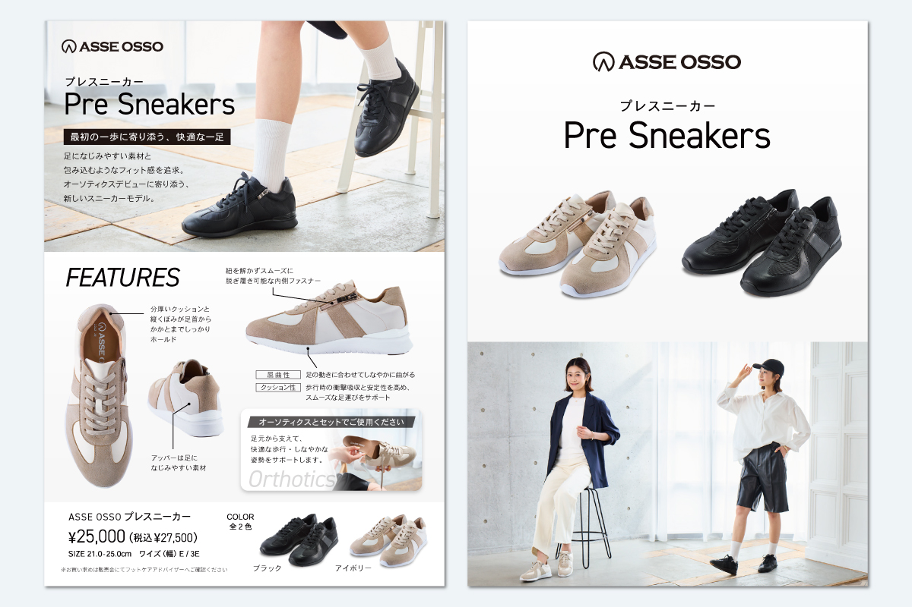
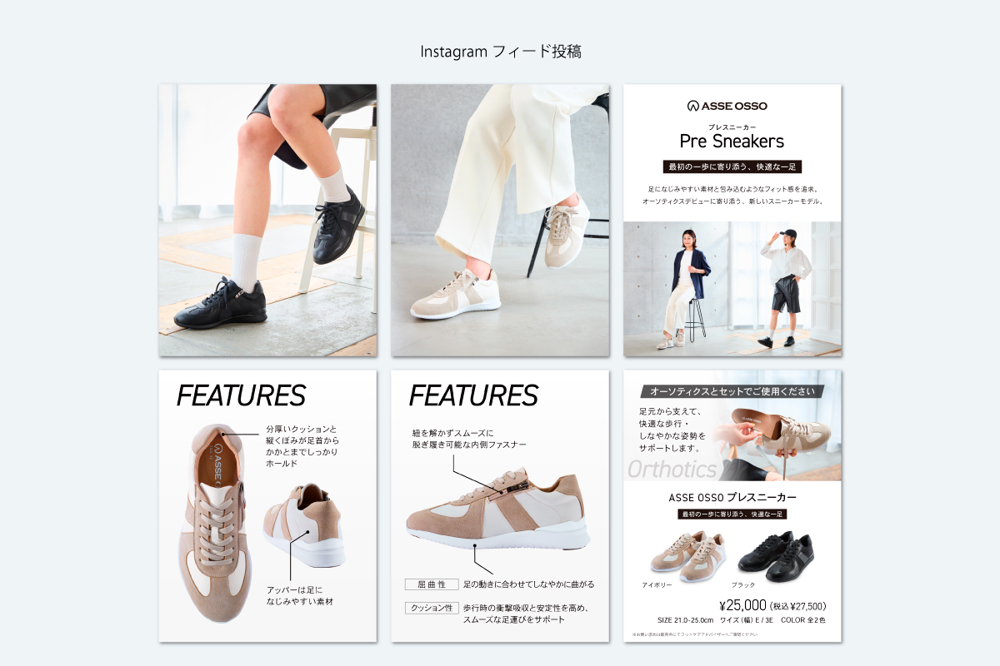
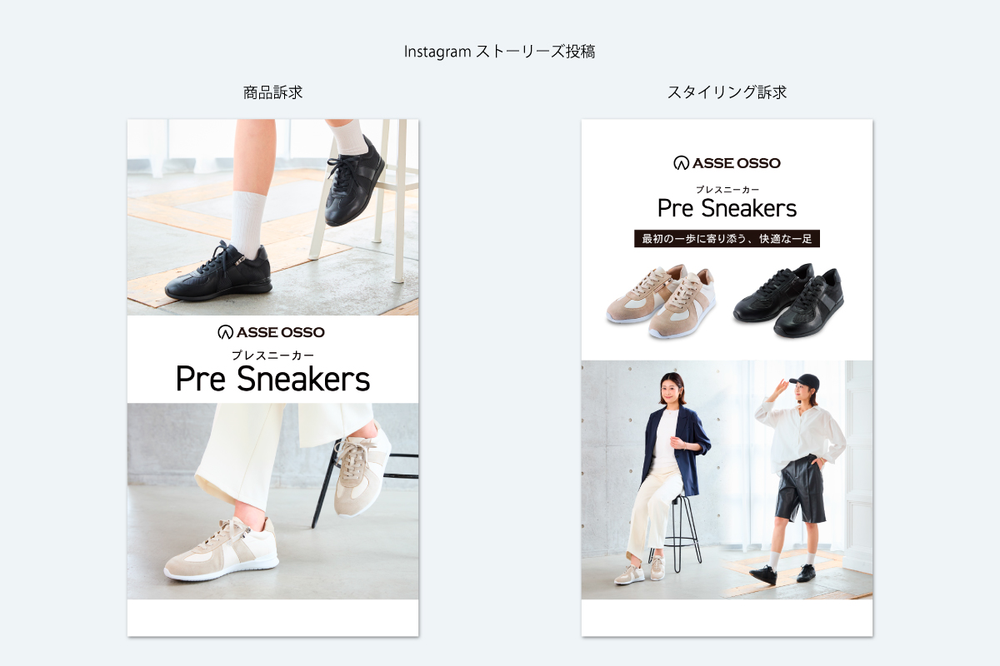
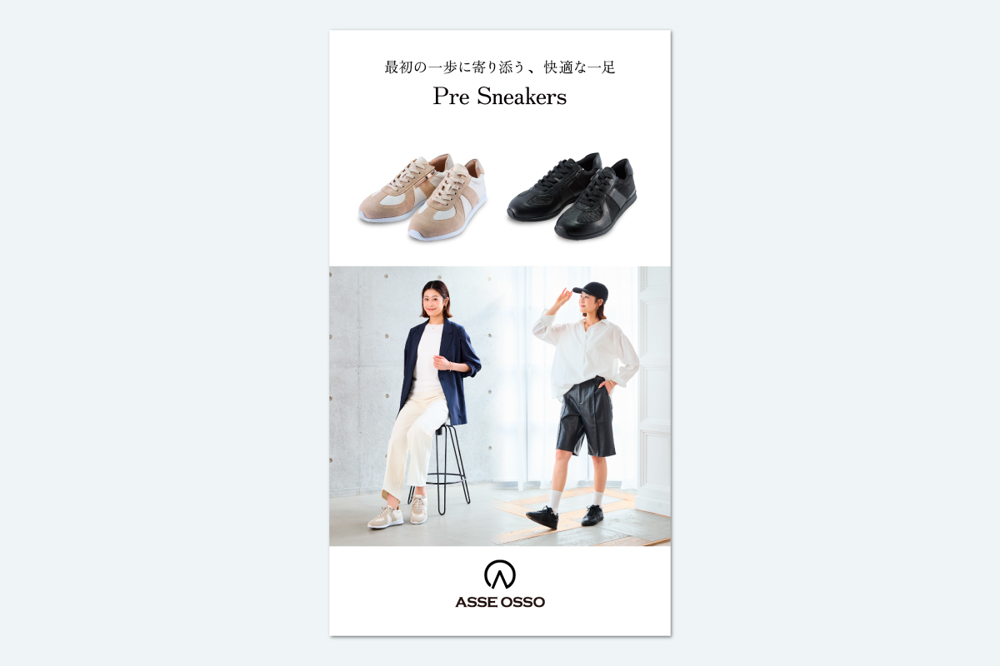
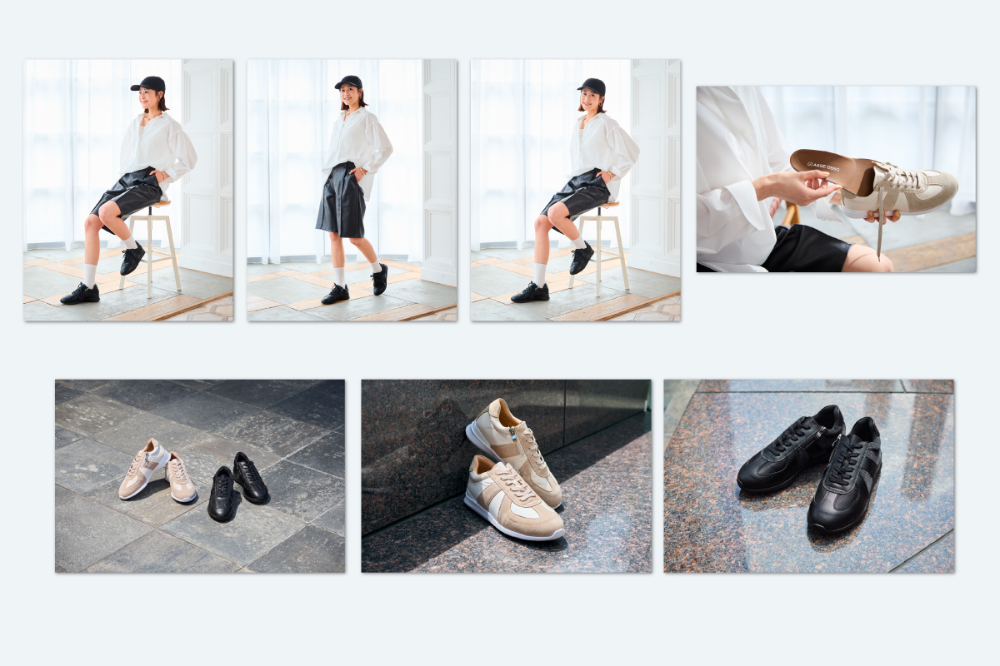

プレスニーカー発売





Instagram投稿
| 制作期間 | 2026年5月～7月 |
| 制作時間 | 約24時間 |
| 依頼元 | ASSE OSSO |
| 媒体 | フライヤー、Instagram（フィード・ストーリーズ・リール）、LINE |
| 使用アプリ | Illustrator、Photoshop、Premire、Adobe Express |
制作背景・意図
新商品であるASSE OSSOの初心者向けスニーカーであるプレスニーカーの制作を担当しました。マーケティング部への異動を機に、待望のモデル撮影を実施。撮影チームとオーソティクスグループの間を取り持つ進行調整役として役割を果たしました。詳細な撮影資料を作成し、撮影イメージの共有をしました。
撮影も立ち合い、プロモーション用の動画も隙間で撮影。動画制作費を掛けずに、社内で撮影～編集～完成まで一律で実施。BGMは都会的なアーバン系でモダンでスタイリッシュな印象を持たせ、テキストの動きのあるアニメーション挿入等はAdobe Expressを使用し、Premireと同時並行で作業時間短縮にも努めて完成させました。
また、メイン商材であるオーソティクスをスニーカーに入れる図は初めてモデルありで撮影を実施。フライヤーにもオーソティクスとの併用使用を打ち出し、購入促進を図りました。
衣服が商品であるスニーカーと被っていたため、社内でレタッチを施し、商品が目立つように修正も行いました。
ASSE OSSOとしてのブランドイメージであるモノトーンを使用したテンプレになる商品紹介フライヤーを制作。以降続く、商品フライヤーも同じパターンで統一し、ブランドイメージ向上にも貢献するようにしました。